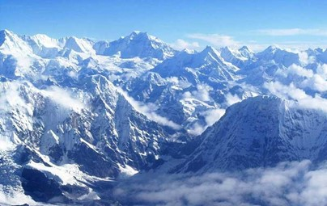
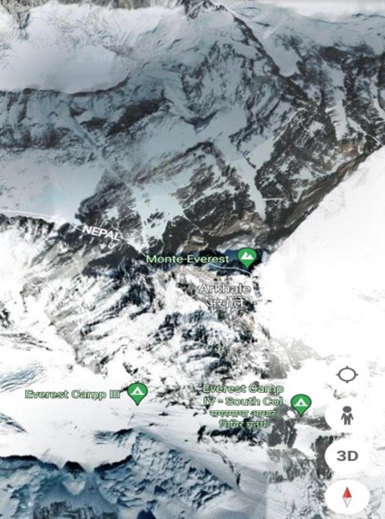
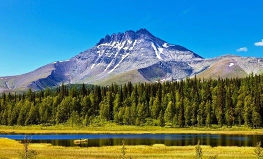

Turismo geológico, un viaje a través del tiempo.
La colisión continental es un procesa de la tectónica de placas por el cual dos placas tectónicas continentales entran en contacto debido a las fuerza tectónicas que las empujan. Las placas terctónicas constan de regiones oceánicas y continentales y la colisión continental ocurre cuando la parte oceánica de una placa ha subducido totalmente bajo la otra. La colisión continental es un fenómeno que tiene lugar en periodos de tiempo del orden de decenas o centenares de millones de años.
El Himalaya: es una cordillera situada en el continente asiático y se extiende por varios países: Bután, Nepal, China, India, y Pakistán. Forma parte de un complejo orográfico mayor, el sistema de los Himalayas, un conjunto compuesto por las cordilleras del Himalaya. Nacen algunos de los mayores ríos del mundo, como el río Ganges o el río Indo. El Himalaya es el resultado de la colisión de la placa india y la placa euroasiática. La placa de la India, que se dirigia hacia el norte a una velocidad de 15cm por año, chocó con la placa Euroasiática. La parte del oceáno Tethis que las separaba desapareció completamente hace cerca de 50Ma. La placa de la India continúa moviéndose a una velocidad constante de unos 5cm por año, subduciéndose bajo la placa euroasiática y causando la elevación de los Himalayas y de la meseta tibetana.
 Montes Urales: los montes Urales son una larga y baja cordillera montañosa considerada la frontera natural entre Europa y Asia, aunque en la práctica no constituya una división real, ni lingüística, étnica, climática o histórica. A pesar de su baja altura promedio, la cordillera resalta claramente en comparación con las suaves ondulaciones y llanuras que se encuentran al este y oeste de la misma, administrativamente, pertenicientes a Rusia y Kazajistán.
